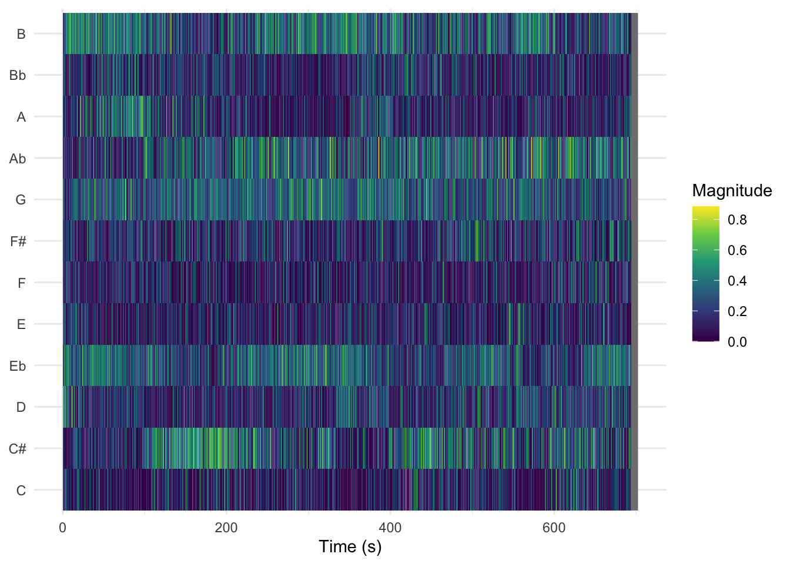
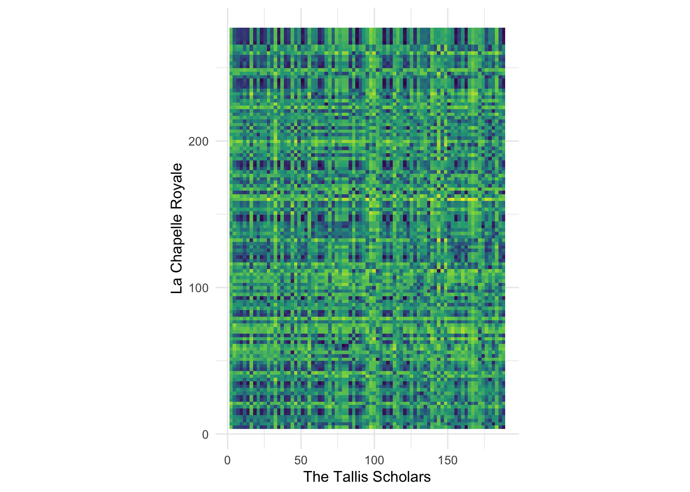

remotes::install_github('jaburgoyne/compmus')Week 8 · Chroma Features
You can download the raw source code for these lecture notes here.
Course Meeting Plan
Wednesday · 18 February · Lecture
- Video: Antescofo (10 min)
- Lecture: What are chroma features? (20 min)
- Demo: Sonic Visualiser (10 min)
- Lecture: Dynamic time warping (20 min)
- Breakout 1: Chroma and tuning (10 min)
- Plenary Discussion: Breakout findings (5 min)
- Lecture: MIR features and music cognition (15 min)
Wednesday · 18 February · Lab
- Demo: Chromagrams (15 min)
- Breakout: Chromagrams (20 min)
- Plenary Discussion: Breakout findings (10 min)
- Demo: compmus_long_distance (15 mins)
- Breakout: Dynamic time warping (20 mins)
- Plenary Discussion: Breakout findings (10 mins)
Breakout 1: Chroma and Tuning
As a group, discuss Exercise 3.6 from the textbook:
Assume that an orchestra is tuned 20 cents upwards compared with the standard tuning. What is the center frequency of A4 in this tuning? How can a chroma representation be adjusted to compensate for this tuning difference?
Be prepared to return to the full group with answers to these questions.
Breakout 2: Chromagrams in R
In this breakout group, you will start working with chromagrams in R, and how to interpret them.
Installing Sonic Visualiser and the Vamp Plug-in Pack
Just once, you need to install Sonic Visualiser and its Vamp Plug-in Pack. This tools will form the basis for the more detailed analyses in the course.
Creating a chromagram in Sonic Visualiser
Sonic Visualiser works with actual audio files, not streaming links. That means that you will need to purchase a DRM-free version of any piece of music you want to analyse (e.g., from the iTunes or Google Play stores). For most portfolios, you will want to focus on 1–4 tracks for the detailed analyses, and so the total cost of music need not be more than €5.
To create a chromagram in Sonic Visualiser, open the audio file using the File menu. Then go to the Transform menu and select Analysis by Category / Visualisation / NNLS Chroma: Chromagram. (There are other chromagram options, but they will not work with the template code for this course.) Return to the File menu and choose Export Annotation Layer. You will be prompted for a filename – choose a name and location you will remember! – and then given an opportunity to select a few more options. Select ‘Include header row…’ and ‘Include timestamp column…’ and then click OK to save your chromagram. Finally, load the CSV file you saved into RStudio like we did with the Exportify CSVs last week.
Installing compmus
Just once, you need to install the compmus package, a special package I wrote for this course to sand off some rough edges in music data analysis. First, you will need to install the remotes package from the Tools menu. Then you can install compmus with the following line of code:
Setup
Once you have compmus installed, we will start this analysis like every other analysis, by loading tidyverse. From now on, we also add compmus to the list of libraries to load every time.
library(tidyverse)── Attaching core tidyverse packages ──────────────────────── tidyverse 2.0.0 ──
✔ dplyr 1.2.0 ✔ readr 2.1.6
✔ forcats 1.0.1 ✔ stringr 1.6.0
✔ ggplot2 4.0.2 ✔ tibble 3.3.1
✔ lubridate 1.9.5 ✔ tidyr 1.3.2
✔ purrr 1.2.1
── Conflicts ────────────────────────────────────────── tidyverse_conflicts() ──
✖ dplyr::filter() masks stats::filter()
✖ dplyr::lag() masks stats::lag()
ℹ Use the conflicted package (<http://conflicted.r-lib.org/>) to force all conflicts to become errorslibrary(compmus)One of the compmus helper functions, compmus_wrangle_chroma(), converts the data frames we import from Sonic Visualiser to a mroe useful format for analysis in this course.
Let’s analyse a recording of Steve Reich’s ‘Music for Pieces of Wood’ (well worth a listen if you don’t know the piece). You can download a CSV file for this analysis here; once we start making portfolios next week, we’ll use code like the following example.
wood <- read_csv("../dat/wood.csv")Rows: 15114 Columns: 13
── Column specification ────────────────────────────────────────────────────────
Delimiter: ","
dbl (13): TIME, A, Bb, B, C, C#, D, Eb, E, F, F#, G, Ab
ℹ Use `spec()` to retrieve the full column specification for this data.
ℹ Specify the column types or set `show_col_types = FALSE` to quiet this message.The key to making a chromagram is geom_tile(). It is powerful but has it’s wrinkles. Much of the code in the next block is code that you will simply need to copy every time you use it; next week we’ll develop a better understanding of what is going on.
First, we want to choose a norm for the chroma vectors – manhattan, euclidean, or chebyshev – using the new helper function compmus_normalise() (and a little help from the map() function, which we’ll see more of next week). The name of the normalisation is the only thing in that line of code that you need to change in your breakout group work.
Next, we need to convert the data to so-called long format: a new row for each pitch class. There is a helper function compmus_gather_chroma() to do that.
Finally we can plot, but beware that ggplot centres each tile on the x or y coordinate instead of using the left corner. Use the duration to make a correction for it.
I’ve added labels, a simpler theme, and a scientific colour scheme to make the plot look a little nicer.
wood |>
compmus_wrangle_chroma() |>
mutate(pitches = map(pitches, compmus_normalise, "euclidean")) |>
compmus_gather_chroma() |>
ggplot(
aes(
x = start + duration / 2,
width = duration,
y = pitch_class,
fill = value
)
) +
geom_tile() +
labs(x = "Time (s)", y = NULL, fill = "Magnitude") +
theme_minimal() +
scale_fill_viridis_c()
Instructions
As a group, work through the following steps.
- Listen to a few seconds of the piece. After you have listened, try to explain why this chromagram looks the way it does.
- The sample chromagram uses a Euclidean norm for the chroma vectors. Try regenerating the chromagram with Manhattan and Chebyshev norms. What changes?
- Choose a different piece from your corpus and make a chromagram. Try the three different norms. Can you explain the patterns you see?
Choose one member of your group who will be prepared to share their screen when we discuss the results at the end of the breakout sessions.
Breakout 3: Dynamic Time Warping
In order to take the step from chromagrams to dynamic time warping, we need to choose an appropriate distance metric to measure how far apart we think two different chroma vectors are. Distance metrics usually form conceptual pairs with norms (see the table below), although there are no standard distance metrics to use after Chebyshev normalisation.
Theoretically, the Manhattan norm–Aitchison distance pair and the Euclidean norm–angular distance pair are most appropriate for chroma vectors. But the Manhattan norm–Manhattan distance pair and the Euclidean norm–cosine distance pair are faster to compute and often good enough. The cosine distance, in particular, is extremely popular in practice.
| Domain | Normalisation | Distance |
|---|---|---|
| Non-negative (e.g., chroma) | Manhattan | Manhattan |
| Aitchison | ||
| Euclidean | cosine | |
| angular | ||
| Chebyshev | [none] |
Let’s look at six recordings of Josquin des Prez’s ‘Ave Maria’. You can download the corresponding Sonic Visualiser CSV files here:
- The Tallis Scholars
- La Chapelle Royale
- Oxford Camerata
- Chanticleer
- The Hilliard Ensemble
- The Gabrieli Consort
## The Tallis Scholars
tallis <- read_csv("../dat/tallis.csv")Rows: 4084 Columns: 13
── Column specification ────────────────────────────────────────────────────────
Delimiter: ","
dbl (13): TIME, A, Bb, B, C, C#, D, Eb, E, F, F#, G, Ab
ℹ Use `spec()` to retrieve the full column specification for this data.
ℹ Specify the column types or set `show_col_types = FALSE` to quiet this message.## La Chapelle Royale
chapelle <- read_csv("../dat/chapelle.csv")Rows: 6183 Columns: 13
── Column specification ────────────────────────────────────────────────────────
Delimiter: ","
dbl (13): TIME, A, Bb, B, C, C#, D, Eb, E, F, F#, G, Ab
ℹ Use `spec()` to retrieve the full column specification for this data.
ℹ Specify the column types or set `show_col_types = FALSE` to quiet this message.## Oxford Camerata
oxford <- read_csv("../dat/oxford.csv")Rows: 7305 Columns: 13
── Column specification ────────────────────────────────────────────────────────
Delimiter: ","
dbl (13): TIME, A, Bb, B, C, C#, D, Eb, E, F, F#, G, Ab
ℹ Use `spec()` to retrieve the full column specification for this data.
ℹ Specify the column types or set `show_col_types = FALSE` to quiet this message.## Chanticleer
chanticleer <- read_csv("../dat/chanticleer.csv")Rows: 9319 Columns: 13
── Column specification ────────────────────────────────────────────────────────
Delimiter: ","
dbl (13): TIME, A, Bb, B, C, C#, D, Eb, E, F, F#, G, Ab
ℹ Use `spec()` to retrieve the full column specification for this data.
ℹ Specify the column types or set `show_col_types = FALSE` to quiet this message.## The Hilliard Ensemble
hilliard <- read_csv("../dat/hilliard.csv")Rows: 8864 Columns: 13
── Column specification ────────────────────────────────────────────────────────
Delimiter: ","
dbl (13): TIME, A, Bb, B, C, C#, D, Eb, E, F, F#, G, Ab
ℹ Use `spec()` to retrieve the full column specification for this data.
ℹ Specify the column types or set `show_col_types = FALSE` to quiet this message.## The Gabrieli Consort
gabrieli <- read_csv("../dat/gabrieli.csv")Rows: 9119 Columns: 13
── Column specification ────────────────────────────────────────────────────────
Delimiter: ","
dbl (13): TIME, A, Bb, B, C, C#, D, Eb, E, F, F#, G, Ab
ℹ Use `spec()` to retrieve the full column specification for this data.
ℹ Specify the column types or set `show_col_types = FALSE` to quiet this message.The compmus_long_distance() helper function gets everything ready to plot the distances between the chroma vectors in two different pieces. It takes two data frames (don’t forget to normalise the chroma vectors), the feature we want to compute distance over (pitches in our case), and any of the distance measures in the table above. It returns a long table ready for plotting, with xstart, xduration, ystart, and yduration.
compmus_long_distance(
tallis |>
compmus_wrangle_chroma() |>
mutate(pitches = map(pitches, compmus_normalise, "chebyshev")) |>
filter(row_number() %% 50L == 0L),
chapelle |>
compmus_wrangle_chroma() |>
mutate(pitches = map(pitches, compmus_normalise, "chebyshev")) |>
filter(row_number() %% 50L == 0L),
feature = pitches,
method = "euclidean"
) |>
filter(!is.nan(d)) |>
ggplot(
aes(
x = xstart + xduration / 2,
width = 50 * xduration,
y = ystart + yduration / 2,
height = 50 * yduration,
fill = d
)
) +
geom_tile() +
coord_equal() +
labs(x = "The Tallis Scholars", y = "La Chapelle Royale") +
theme_minimal() +
scale_fill_viridis_c(guide = NULL)Warning: Using `by = character()` to perform a cross join was deprecated in dplyr 1.1.0.
ℹ Please use `cross_join()` instead.
ℹ The deprecated feature was likely used in the compmus package.
Please report the issue to the authors.
Instructions
As a group, work through the following steps.
- Try different combinations of norms and distance metrics until the pattern seems visually clearest to you.
- There seems to be a dark, mostly straight, diagonal link from the lower left to the upper right corner. What does this pattern mean? Why isn’t the line perfectly straight?
- Try plotting different pairs of performances. Do you always see a diagonal line? Is it always straight? How can you explain what you are seeing?
Be prepared to discuss your finding with the larger group at the end of the breakout session.
Advanced work
If you are comfortable with R and want to compute actual DTW alignments instead of just making a visual analysis, look into the R dtw package.
Warning
The output of geom_tile() can be very large if sent through ggplotly() and will probably not work for your portfolios. It will either be very slow to load or simply leave a blank space on the page.